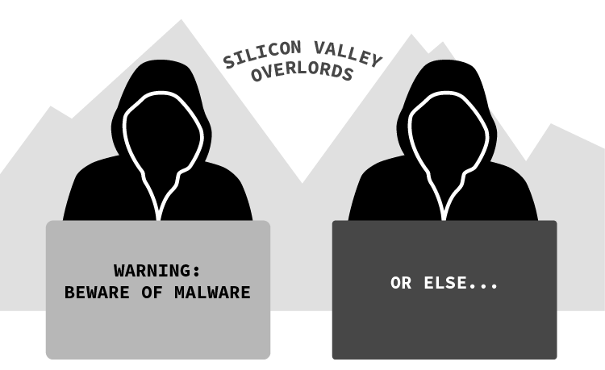
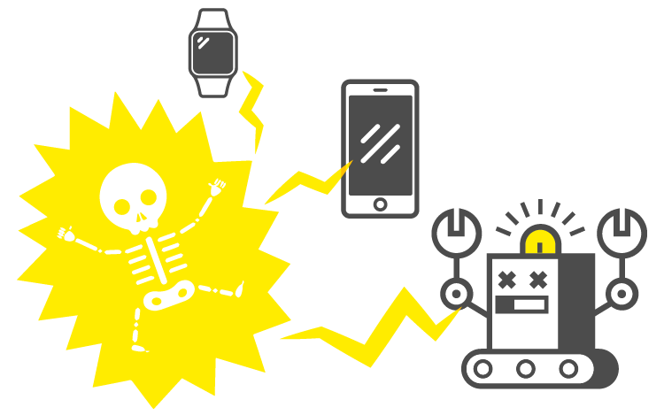
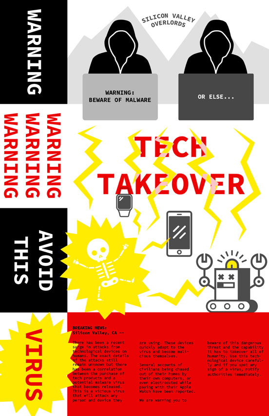

This assignment has been a pen-pal collaboration between Savannah Sturm and Tricia Vuong. From March-May 2017 these two students have been working on this project. Savannah and Tricia communicated both via snail mail and email to produce a breaking news poster that would potentially be distributed in the future.
This project distributes through a fold out breaking news poster the dangers of a potential tech virus being released that will destroy humanity.
The poster can be for anyone but is mostly geared towards those in the tech industry. The poster will be distributed as a warning sign with the purchase of any tech product.
The poster will be attached to the packaging of all tech products before they are shipped. When opened, the user will read the information as a warning sign before using the product. Depending where the user is at the time, after reading the poster the user can either hang up the breaking news poster as a warning for someone else or dispose of it. What happens to the poster after the audience member opens it is up to them.
This project is valuable because it is distributed with the intention that it will protect and save humanity. Similarly to the photos of damaged lungs on cigarette packs, this poster will be like a visual warning. It is then up to the user if they continue to use the product and risk a tech takeover.
The user will receive the breaking news poster when they purchase a tech product such as the newest iPhone or MacBook. In the packaging, they will receive a fold out warning sign that will take them through a visceral example of the potential dangers. It is then up to the user to take the warning into their own hands and decide whether or not they will continue to use the product despite the danger. The user will also have to decide if they will keep this information to themselves or hang up the poster in a public space.
The experience should come as a surprise but will be very easy to use. Some users may have heard of the tech takeover from friends or on the news, but the reality of danger will be more present when they have the tech product at their hands. On the poster, there is a small breaking news article that has the reports of civilians being attacked by their products. No matter how large of a warning, it'll be up to the user to make their own personal decision on what to do afterwards.
the folded poster comes on the packaging of a tech product
the first few sections are unfolded to reveal multiple warnings about the product
the full poster unfolds to reveal an explanation of the danger
We collaborated over the course of three months in putting this together. Early on we agreed the subject would be a tech takeover and drew inspiration from constructivist designs and an episode of The Twilight Zone. We also had a shared Google Document that we have both updated weekly throughout this process.
Savannah Sturm is a Senior in Graphic Design at RISD. Tricia Vuong is a third year Journalism + Design student at The New School. Our professor is Dylan Greif.